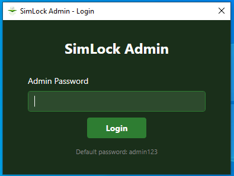
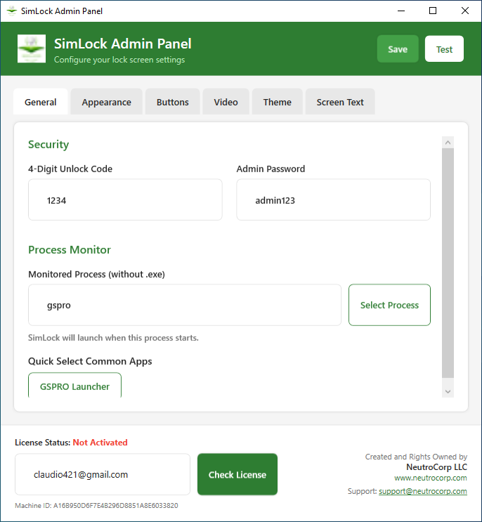
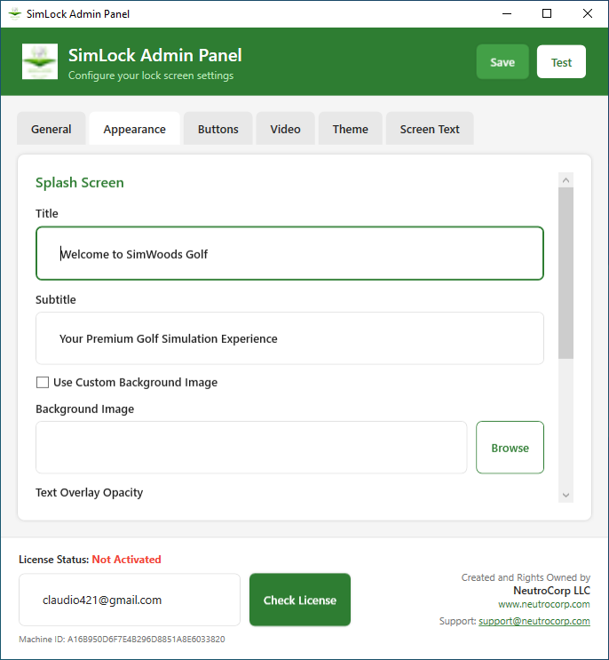
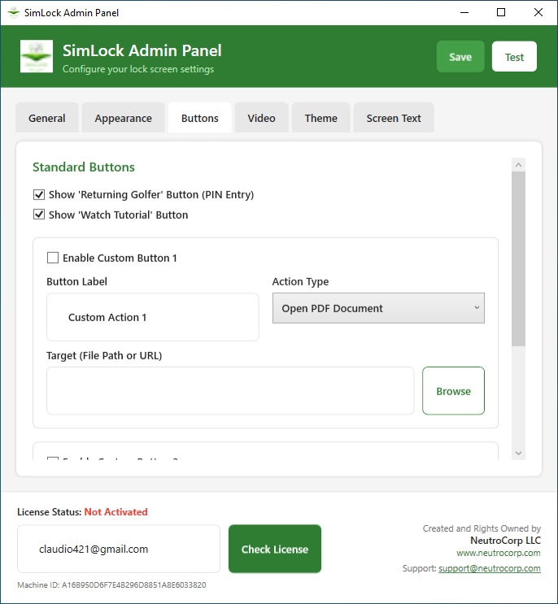
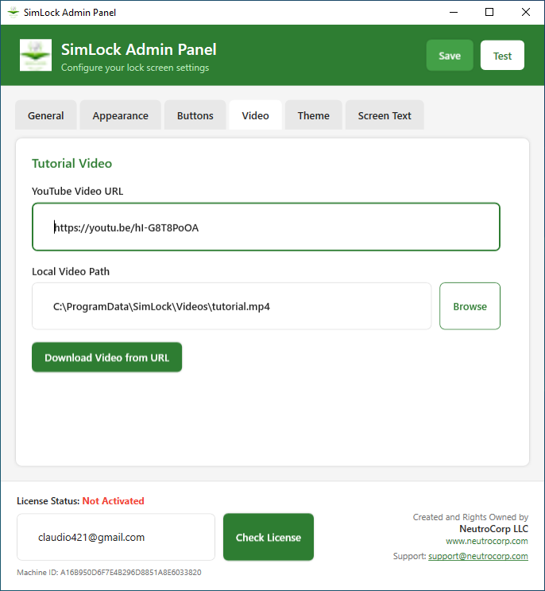
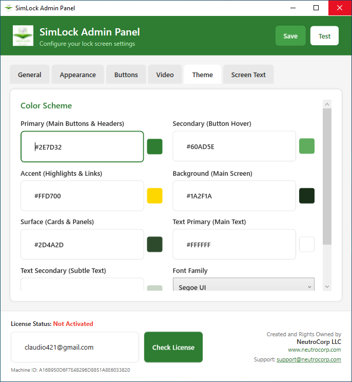
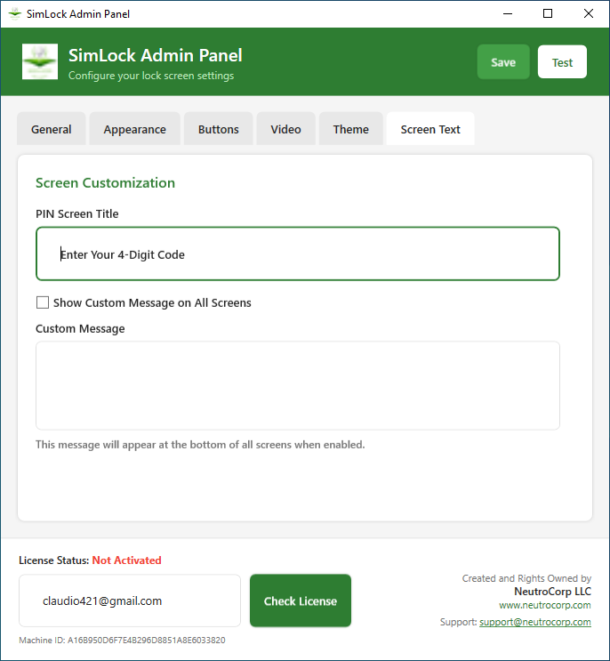

SimLock
Administrator Guide
Version 2.0
NeutroCorp LLC
www.neutrocorp.com
support@neutrocorp.com
1. Overview
SimLock is a professional kiosk lock screen application designed specifically for golf simulators. It provides a secure, customizable splash screen that activates when your golf simulation software starts, ensuring users complete required actions before accessing the simulator.
Key Features
- Automatic Activation - Launches automatically when your golf software starts
- PIN Protection - Secure 4-digit unlock code for returning golfers
- Tutorial Videos - Built-in video player for first-time user instructions
- Custom Branding - Fully customizable colors, logos, and text
- Custom Actions - Configure buttons to open websites, PDFs, pictures, or launch programs
- Theme System - Complete control over the visual appearance
Components
| Component |
Description |
| SimLock.Admin.exe |
Configuration panel for all settings |
| SimLock.exe |
The lock screen application |
| SimLock.Monitor.exe |
Background service that watches for your golf software |
| SimLock.Launcher.exe |
Manual launcher for testing |
2. Installation
System Requirements
- Windows 10 or Windows 11
- .NET 8.0 Runtime (included in installer)
- 1920x1080 or higher display resolution recommended
- Internet connection for license activation and video downloads
Installation Steps
- Download the SimLock installer (SimLock_Installer.zip)
- Extract the ZIP file to a folder
- Run
SimLock_Setup.exe
- Follow the installation wizard
- Choose whether to add desktop shortcuts and auto-start options
- Complete the installation
Note: We recommend enabling "Start SimLock Monitor with Windows" during installation so the lock screen automatically activates when your golf software launches.
3. Getting Started
First Launch
After installation, launch SimLock Admin from the Start Menu or desktop shortcut.

Figure 3.1 - Admin Login Screen
Enter the admin password to access the configuration panel. The default password is admin123.
Important: Change the default admin password immediately after first login to secure your configuration.
Quick Setup Checklist
- Change the admin password (General tab)
- Set your 4-digit unlock code (General tab)
- Configure the monitored process (e.g., "GSPro Launcher")
- Customize your splash screen title and subtitle (Appearance tab)
- Upload your logo (Appearance tab)
- Add a tutorial video URL (Video tab)
- Activate your license (footer)
- Click Save and test with the Test button
4. Admin Panel Configuration
4.1 General Tab
The General tab contains security settings and process monitoring configuration.

Figure 4.1 - General Tab
Security Settings
| Setting |
Description |
| 4-Digit Unlock Code |
The PIN code returning golfers enter to unlock the screen |
| Admin Password |
Password required to access this admin panel |
Process Monitor
Enter the name of the process to monitor (without .exe). When this process starts, SimLock will automatically display the lock screen.
Tip: Use the "GSPRO Launcher" quick select button for common golf simulator software, or click "Select Process" to choose from currently running applications.
4.2 Appearance Tab
Customize the visual appearance of your splash screen.

Figure 4.2 - Appearance Tab
Splash Screen Settings
| Setting |
Description |
| Title |
Main heading displayed on the splash screen |
| Subtitle |
Secondary text below the title |
| Use Custom Background |
Enable to use your own background image |
| Background Image |
Path to your custom background image |
| Text Overlay Opacity |
Transparency of the text box (50-100%) |
Branding
Upload your company logo and splash image to personalize the lock screen for your golf facility.
4.3 Buttons Tab
Configure which buttons appear on the lock screen and what actions they perform.

Figure 4.3 - Buttons Tab
Standard Buttons
- Returning Golfer - Shows the PIN entry screen
- Watch Tutorial - Plays the tutorial video
Custom Buttons
You can add up to 2 custom buttons with the following action types:
| Action Type |
Description |
| Start Program |
Launch an executable file |
| Open Website |
Open a URL in the default browser |
| Play Local Video |
Play a video file in the built-in player |
| Open PDF Document |
Open a PDF in the default PDF viewer |
| Open Picture |
Open an image in the default image viewer |
4.4 Video Tab
Configure the tutorial video for first-time users.

Figure 4.4 - Video Tab
Video Options
- YouTube Video URL - Enter a YouTube video URL
- Local Video Path - Path to a local MP4 video file
- Download Video from URL - Download a YouTube video for offline playback
Note: Downloading videos requires an internet connection. The download progress will be displayed, and videos are saved in MP4 format for maximum compatibility.
4.5 Theme Tab
Customize the color scheme and fonts used throughout the application.

Figure 4.5 - Theme Tab
Color Settings
| Color |
Used For |
| Primary |
Main buttons, headers, and accents |
| Secondary |
Button hover states |
| Accent |
Highlights and links |
| Background |
Main screen background |
| Surface |
Cards and panels |
| Text Primary |
Main text color |
| Text Secondary |
Subtle/secondary text |
Tip: Click the colored box next to each field to open a color picker dialog, or enter hex color codes directly.
4.6 Screen Text Tab
Customize text displayed on the lock screen.

Figure 4.6 - Screen Text Tab
Settings
- PIN Screen Title - Text shown above the PIN entry keypad
- Show Custom Message - Enable to display a custom message on all screens
- Custom Message - Your custom text (appears at bottom of screens)
5. Lock Screen Features
5.1 Splash Screen
The splash screen is the first thing users see when the lock screen activates.

Figure 5.1 - Splash Screen
Users tap anywhere on the screen to continue to the main menu.
5.2 Main Menu
The main menu presents options for users to proceed.

Figure 5.2 - Main Menu
Default Options
- Returning Golfer - For users who know the PIN code
- First Time? Watch Tutorial - For new users to watch instructional video
5.3 PIN Entry
Returning golfers enter the 4-digit PIN code to unlock the screen.

Figure 5.3 - PIN Entry Screen
Controls
- Number Pad - Tap to enter digits
- DEL - Delete the last entered digit
- C (Clear) - Clear all entered digits
- Back to Main Menu - Return to the main menu
5.4 Video Player
The built-in video player shows tutorial content to first-time users.

Figure 5.4 - Tutorial Video Player
Features
- Full-screen video playback
- Time remaining display
- Back to Main Menu button (top left)
- Automatic unlock after video completes
6. Licensing & Activation
Activating Your License
SimLock requires activation for full functionality. Your license is tied to your email address and machine.
Activation Steps
- Enter your licensed email address in the activation field at the bottom of the Admin Panel
- Click Check License
- If valid, your license will be activated automatically
- The status will change to "Activated" in green
License Management
- Each license allows a specific number of machine activations
- You can deactivate a machine to free up an activation slot
- Machine ID is displayed at the bottom of the Admin Panel
Important: Do not share your license credentials. Each license is tied to your account and unauthorized use may result in deactivation.
7. Troubleshooting
Common Issues
Lock screen doesn't appear when golf software starts
- Verify SimLock Monitor is running (check system tray)
- Confirm the correct process name is entered in General tab
- Process name should NOT include ".exe"
- Try using "Select Process" while your golf software is running
Video won't play
- Ensure the video file exists at the specified path
- Try downloading the video for local playback
- Verify the video is in MP4 format
License activation fails
- Check your internet connection
- Verify the email address is correct
- Contact support if you've exceeded your activation limit
Colors or theme not applying
- Click Save after making changes
- Use the Test button to preview changes
- Verify hex color codes are valid (e.g., #2E7D32)
8. Support
Contact Information
When Contacting Support
Please include the following information:
- Your license email
- Machine ID (shown in Admin Panel footer)
- SimLock version
- Windows version
- Description of the issue
- Screenshots if applicable
Thank you for choosing SimLock!
We're committed to providing the best kiosk lock screen solution for your golf simulation business.
© 2024 NeutroCorp LLC. All rights reserved.
SimLock is a trademark of NeutroCorp LLC.